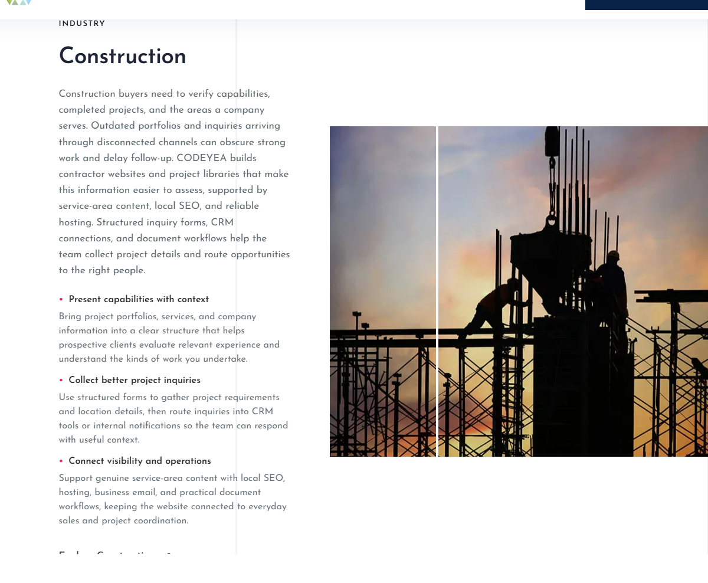
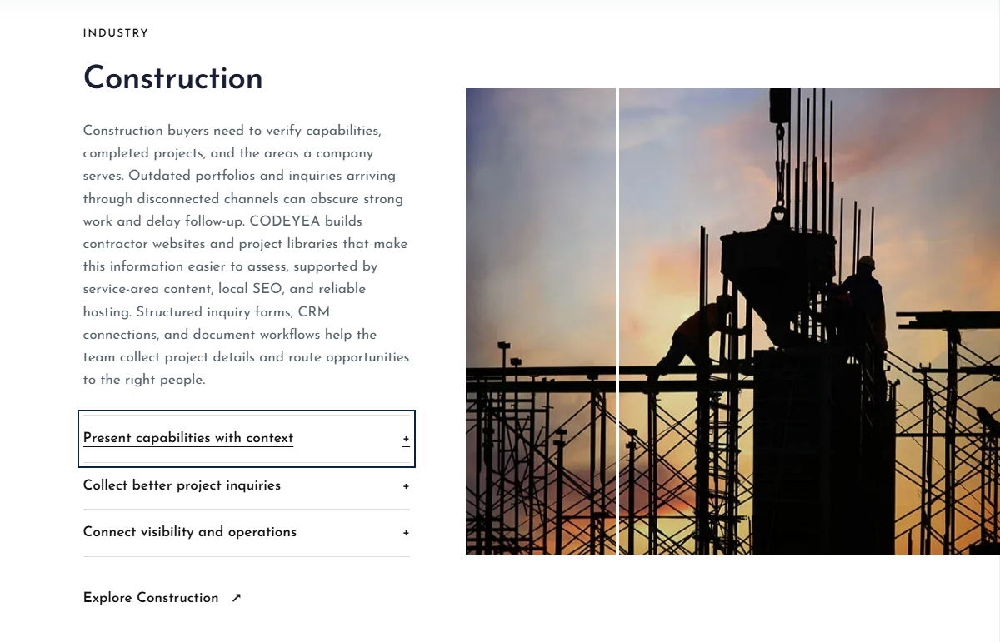
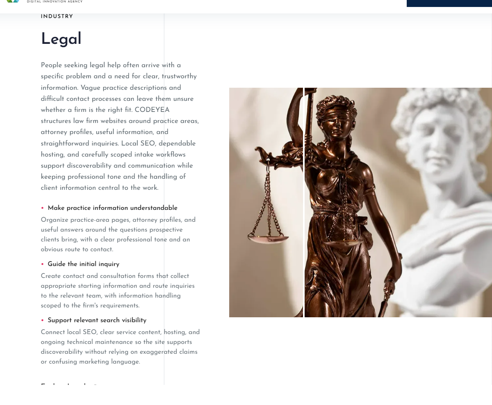
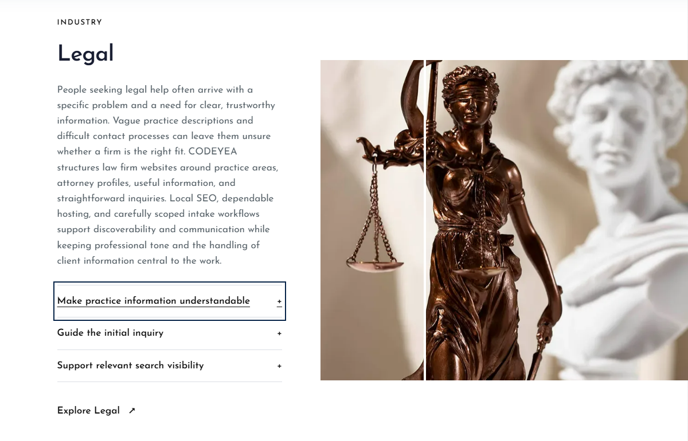
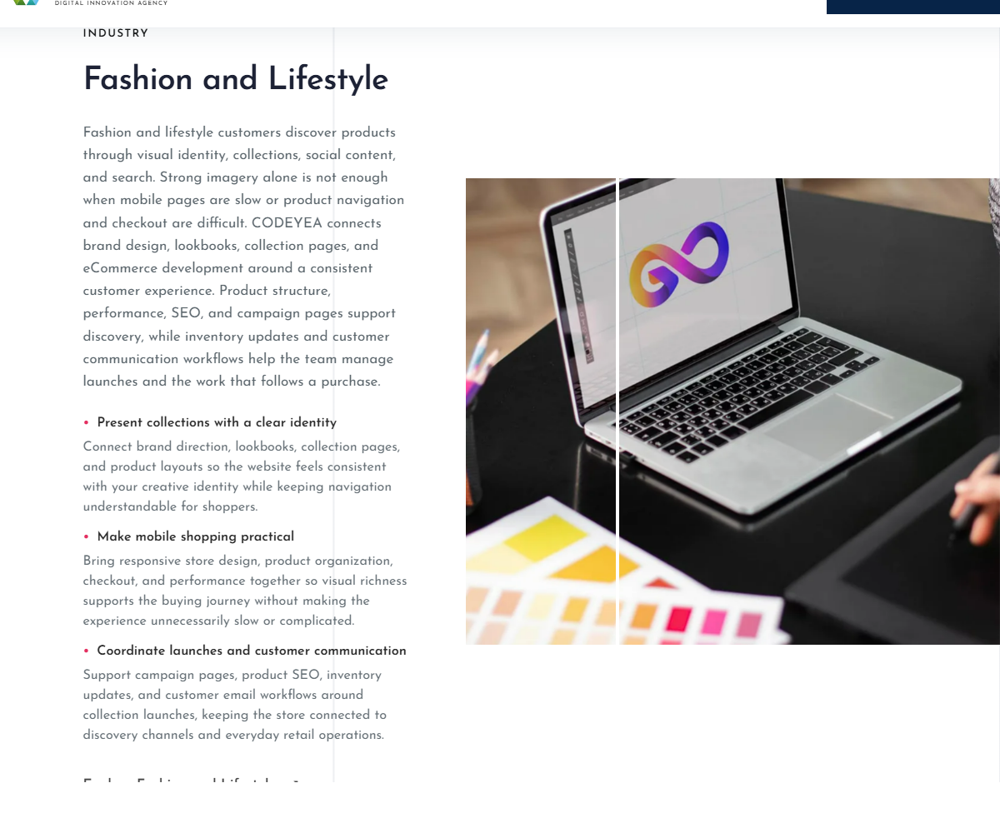
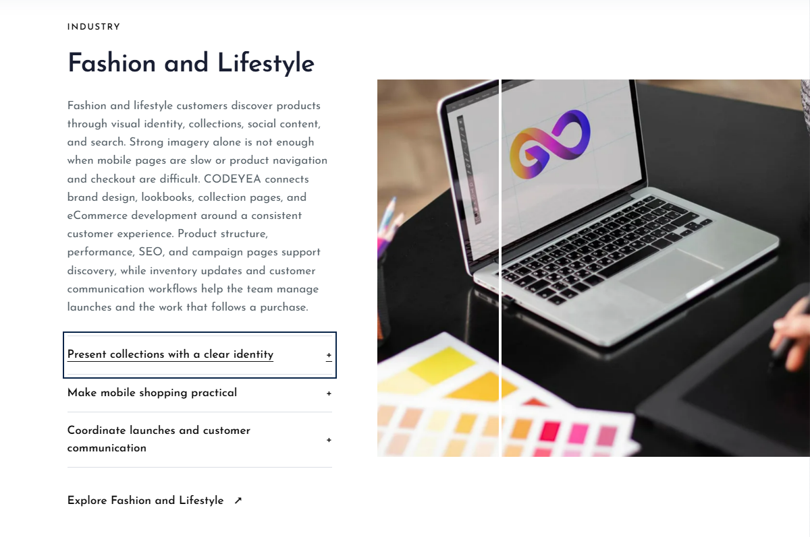

Construction, Legal, Fashion and Lifestyle
The points now open and close using the existing directory accordion style. Text, images, order, layout and CMS fields are preserved. One point opens at a time within each industry. Open actual Industries page
Construction
Before
Updated, collapsed
Legal
Before
Updated, collapsed
Fashion and Lifestyle
Before
Updated, collapsed